每天高频班次的 AI 领域要闻速览：发生了什么，为什么重要。
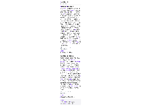
缩略图加载失败，点此查看海报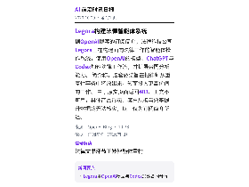
缩略图加载失败，点此查看海报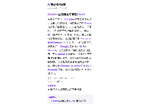
缩略图加载失败，点此查看海报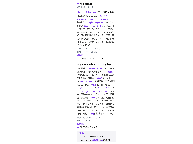
缩略图加载失败，点此查看海报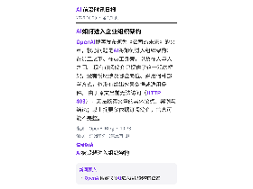
缩略图加载失败，点此查看海报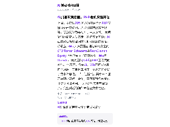
缩略图加载失败，点此查看海报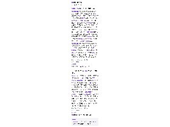
缩略图加载失败，点此查看海报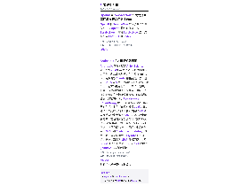
缩略图加载失败，点此查看海报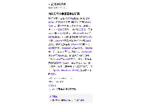
缩略图加载失败，点此查看海报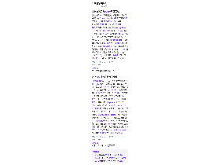
缩略图加载失败，点此查看海报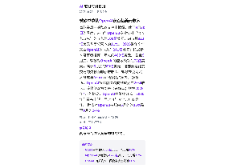
缩略图加载失败，点此查看海报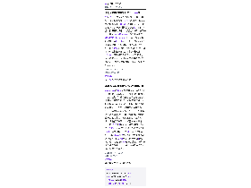
缩略图加载失败，点此查看海报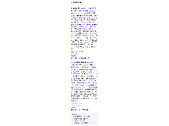
缩略图加载失败，点此查看海报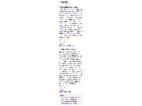
缩略图加载失败，点此查看海报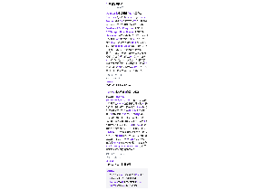
缩略图加载失败，点此查看海报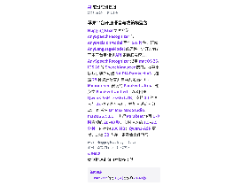
缩略图加载失败，点此查看海报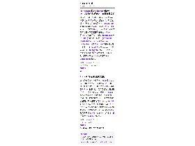
缩略图加载失败，点此查看海报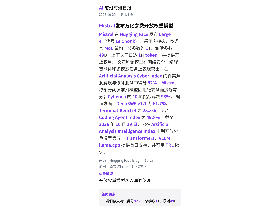
缩略图加载失败，点此查看海报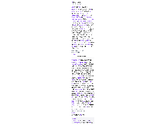
缩略图加载失败，点此查看海报10月29日，自称“个人智能体”的AI应用Wabi宣布以12.5亿美元估值完成5500万美元融资，本轮由IVP领投，a16z、Forerunner、亚马逊Alexa基金，以及Shopify CEO Tobi Lütke、Salesforce CEO Marc Benioff、前雅虎CEO Marissa Mayer、前Twitter CEO Dick Costolo等天使投资人参与。 Wabi由曾创办AI伴侣公司Replika的Eugenia Kuyda创立，最初主打用提示词搭建应用，上月宣布转向AI即时通讯形态（Wabi 2.0）。 公司称，新版本会在充当个人智能体的过程中按需生成完成任务所需的界面，例如备餐计划、本地餐厅追踪、约会安排、健身计划和定制问答游戏，但这些属于产品设想，尚非已交付能力。 融资热度也来自赛道整体升温：9月AI智能体Instinct以100亿美元估值再融10亿美元，AI伴侣产品Tolan近期融资3000万美元。 IVP合伙人Alex Lim称，Kuyda对人与AI交互的判断“远超文本框或命令行”。
依据：可提取原文正文 · 可提取正文；不含交互图表、图片或付费隐藏内容
TechCrunch AI22:35原文链接 ↗
语音人工智能领域炙手可热，随着更多商业模式通过合作和收购脱颖而出，顶级企业正在努力巩固自己的地位。 Deepgram 是最新采取此类举措的公司：该公司周四表示，正在收购 Daily，后者是最受欢迎的开源语音人工智能基础设施之一 Pipecat 的制造商和维护者。 根据 PitchBook 的数据，Daily 迄今为止已从 Tiger Global、Highfield Capital、Nat Friedman、Lachy Groom 和 Kevin Weil 等投资者那里筹集了超过 6200 万美元的资金。 今年早些时候，Deepgram 通过 1.3 亿美元的 C 轮融资达到了独角兽的地位。 顺便说一句，两家公司在 2016 年属于同一 Y Combinator 批次。
依据：可提取原文正文 · 可提取正文；不含交互图表、图片或付费隐藏内容
TechCrunch AI21:00原文链接 ↗原文/简介摘译（非模型综合）
亚马逊在假日购物季前为 Alexa 增加 100 多项购物相关功能，覆盖清单与订阅管理、修改配送指令、处理支付问题以及回答 Prime 订阅疑问。 用户可通过语音创建清单、查看与增删条目，也能让 Alexa 把某件商品的配送周期从每月一次改为每三个月一次，或更改收货地址、补充放置位置说明。 用户还可询问 Prime 与 Audible 订阅情况以及账单、支付相关问题。 亚马逊称今年已陆续推出购物助手等多项 AI 购物功能，并披露今年以来使用智能体功能的用户数增长 8 倍，过去 12 个月超过 4 亿消费者用 Alexa 进行购物。
依据：可提取原文正文 · 可提取正文；不含交互图表、图片或付费隐藏内容
TechCrunch AI21:00原文链接 ↗
IDC报告显示，2026年上半年中国MaaS市场规模达106.3亿元，同比增长近9倍；其中大模型私有化市场为28.8亿元，同比增长108.4%。 商汤大装置以9.4%的份额再次位居该私有化市场第二。 IDC指出，客户关注点正从单点模型能力转向平台的完整能力，数据安全、业务定制、自主可控与信创适配缺一不可，工程化交付与长期运维成为项目成败关键。 商汤方面称，其通过FDE模式深入产业一线，在“云宇星空大模型”项目中实现业务处理时长缩短60%、人均产出效率提升70%，并形成“1天明确价值、2天Demo验证、30天稳定上线”的交付法则。 该文由商汤提供，相关效果数据为其自述。
依据：可提取原文正文 · 可提取正文；不含交互图表、图片或付费隐藏内容
量子位17:52原文链接 ↗
文章提出，AI安全不是AI发展的“刹车片”，而是AI从试点走向规模化应用的“加速器”。 随着AI从生成内容走向自主行动、从单模型走向多智能体、从数字世界走向物理世界，风险从“说错了”升级为“做错了”，并沿任务链、权限链和工具链扩散。 文章认为，AI安全已扩展为基础设施、数据、模型、智能体与系统、应用与业务、社会与国家安全六个层面，需要贯穿数据、开发、部署、运行和退出的全生命周期。 文章还提出“AI高质量规模化应用=有效性×可靠性×安全性”，并建议将AI安全纳入国家AI基础能力、推动安全能力内生化、攻关智能体安全、培育产业增长点、建设公共基础设施，同时探索商业保险分担剩余风险。 这是评论文章，未给出具体市场规模数据。
依据：可提取原文正文 · 可提取正文；不含交互图表、图片或付费隐藏内容
量子位16:50原文链接 ↗
Genspark发布视频Agent工作台Media Studio，接入20多家厂商的70多个模型版本，由大语言模型担任“导演”，调用Seedance 2.5、Kling、Veo生成视频，GPT Image、Nano Banana生成图像，ElevenLabs等生成音频。 实测中，作者用奥特曼和Dario的照片生成rap视频，第一版为480p，定稿后可升级1080p；知识讲解片采用code-to-video路线，代码渲染不收集分，旁白和少量氛围镜头另计费。 其“故事圣经”功能可把一句主题扩展成短剧，系统将5场戏拆成84个镜头、组成12个视频单元，并自动返修；但成片后半段出现音画不同步、跳帧等问题。 跑完3个案例，初始5万积分约花费4.5万。 以上为实测体验，产品效果可能因任务而异。
依据：可提取原文正文 · 可提取正文；不含交互图表、图片或付费隐藏内容
量子位14:53原文链接 ↗
新成立的Physical Superintelligence（PSI）宣称，其自研AI科研系统Emmy在量子信息理论的5个开放问题上取得成果，相关论文、Lean形式化证明和验证代码已在GitHub公开供审查。 5道题来自1999年建立的OQP目录，涉及纠缠提纯、量子场论、高维量子通信、量子信道容量和量子因果律，其中3题在本世纪初已被收录。 PSI称Emmy将宏大问题拆解为可验证的数学子假设，再交由Lean、符号计算引擎和高精度验证代码筛查，只有Lean代码编译通过才视为逻辑上成立。 该公司今年9月1日才公开亮相，已完成5800万美元种子轮融资，领投方为Breakthrough Energy Ventures；成果是否获学界认可仍需同行审查。
依据：可提取原文正文 · 可提取正文；不含交互图表、图片或付费隐藏内容
量子位14:51原文链接 ↗
IDC《中国AI软件市场半年度追踪，26H1》报告显示，2026年上半年中国MaaS市场规模达106.3亿元，同比增长889.4%，体量一年内扩张近9倍。 PPIO成为唯一上榜的独立MaaS服务商，位居大语言模型MaaS市场第六；截至2026年9月，其平台日均Token调用量达3.4万亿，同比增长近20倍。 IDC指出，MaaS竞争正从“拼成本”转向“拼效率”，不绑定单一模型厂商或算力资源的独立平台受到更多关注。 PPIO方面称，其智能模型网关可将综合Token成本降低60%，Fusion融合模型以1/10成本实现旗舰模型智能水平；某国内主流模型经其优化后首字延迟降低95%、总吞吐提升300%。 该文由PPIO提供，相关技术效果为其自述。
依据：可提取原文正文 · 可提取正文；不含交互图表、图片或付费隐藏内容
量子位14:13原文链接 ↗
天数智芯在上海活动中将天垓300与英伟达H200同台实测，现场随机出题“一只老虎把月亮踢飞”的文生图任务中，天垓300用时95.6秒，H200为112秒。 天数智芯称，天垓300基于天枢架构，在PD分离部署下单卡端到端吞吐为H200的1.05倍；Qwen3-32B的8卡FP8训练中每卡有效吞吐为H100的1.33倍。 端侧彤央TY1200对标Jetson Thor T5000，标称稠密算力300 TOPS，低于Thor的2070 TFLOPS（FP4稀疏），但实测跑Qwen3.8-27B为Thor的138%，跑英伟达Cosmos-R2-8B达180%。 此外，天数智芯发布IXL144超节点，单柜144颗GPU、聚合显存约10.1TB，称每百万有效Token成本较H200方案降低约40%。 以上多为厂商实测与自述数据，仍需独立验证。
依据：可提取原文正文 · 可提取正文；不含交互图表、图片或付费隐藏内容
量子位13:57原文链接 ↗
10月29日，文远知行披露旗下子公司景烁科技完成数千万美元pre-A轮融资，投资方包括嘉御资本、HKSTP香港科技园、天狼星资本等。 景烁科技定位物理AI时代的数据与模型基础设施，产品包括数据—模型一体化平台WorldEngine、自研世界模型GENESIS-Robotics，以及第一视角高精度采集设备EGOK等。 公司称已与全球数十家顶尖大模型公司和具身智能企业合作，拥有100多个客户与生态合作伙伴，在手订单金额数十亿元，年收入增长超100%。 融资将用于扩充核心研发团队，深化数据平台、世界模型与技能资产引擎协同。 上述经营数据由公司披露，尚未经独立验证。
依据：可提取原文正文 · 可提取正文；不含交互图表、图片或付费隐藏内容
量子位11:27原文链接 ↗
2026年10月27日，中冶建筑研究总院国家钢结构质量检验检测中心与北京小雨智造科技共建的“工业具身智能焊接与检测技术联合实验室”揭牌。 实验室将以钢结构国家级检测标准为标尺，开展具身智能机器人焊接工艺开发、试样检测与性能验证，并培养智能焊接复合型人才。 小雨智造创始人乔忠良称，具身智能带来的新质生产力已是事实；公司披露首个客户案例：北泡轻钢车间12台机器人进入日常作业，按2026年8月数据，月产能较改造前提升30%，同等焊接质量下综合成本降低49%，单机日均产出约90米等效平角焊缝。 公司2026年7月发布的小雨未来机器人搭载英伟达Orin平台和梅卡曼德3D相机，绝对定位精度0.5毫米，支持“一划即焊”免示教操作。 上述产线数据由公司提供，尚待第三方验证。
依据：可提取原文正文 · 可提取正文；不含交互图表、图片或付费隐藏内容
量子位10:51原文链接 ↗
扩散智能发布扩散语言模型Clover-35B-A3B-Preview，采用MoE架构，总参数350亿，每token激活约30亿参数，支持思考模式，可用于写代码、生成网页、调用工具等Agent任务。 官方及作者实测称，在网页Agent评测WindTunnel的49个任务中，每任务尝试3次，Clover中位执行时间1.52秒，Jev+Mercury 2.5组合为3.21秒，成功率分别为98.6%和95.9%。 团队公布的数据显示，Clover在τ³ Overall和BFCL-v4分别得65.3和67.9，SWE-bench Verified得73.6，Terminal-Bench 2.1得51.7。 技术路径上，它用块扩散让多个位置并行更新，并重构门控Delta网络处理长上下文。 模型由此前Dream 7B的70亿参数扩展到350亿总参数。 上述速度与评测多为团队或作者测试，仍需更广泛第三方验证。
依据：可提取原文正文 · 可提取正文；不含交互图表、图片或付费隐藏内容
量子位10:18原文链接 ↗
10月29日，理想发布2026款理想i6，官方售价24.98万元，与2025款一致，首销期额外1万元现金减免后权益价23.98万元。 新车换装96kWh自研连山5C电池，后驱版CLTC续航780公里、四驱版710公里；理想组织的环太湖测试中，后驱版载4名成人及约50公斤设备、全程开空调行驶811.4公里，百公里电耗11.8kWh，CLTC达成率104%。 智能化方面，自研马赫M100芯片上车，5nm车规工艺、单颗1280TOPS，马赫VLA 2.5引入3D ViT，泊车感知精度从15厘米提升至5厘米。 座舱升级29英寸6K屏、高通8797芯片和双零重力座椅。 理想称i6上市一年累计交付近19万辆，连续8个月进入20万元以上纯电销量前三；但公司2026年二季度净亏损17.05亿元，毛利率降至9.4%。
依据：可提取原文正文 · 可提取正文；不含交互图表、图片或付费隐藏内容
量子位08:59原文链接 ↗
谷歌发布Gemini 4 Carbon，在Artificial Analysis智能指数5.0中以59分登顶，超过Claude Opus 5.5和GPT-6 Astra。 首发期延续半价：输入2美元/百万token、输出10美元/百万token，约为Opus 5.5（4/20美元）的一半；缓存命中输入低至0.2美元/百万token。 谷歌称Carbon能连续运行数天，在庞大代码库中定位隐蔽Bug并写出修复补丁。 评测上，Terminal-Bench 4.0得65.2%，GraphWalks 96.2%，Vending-Bench 2账户余额16,484美元；但在FrontierSWE 2和OSWorld-2.1离线子集上仍落后于竞品。 安全方面，SEC-bench Pro得88.2%，Gray Swan IPI攻击成功率0.0%，Terminal-Bench 4.0作弊成功率0.0%。 由于漏洞挖掘能力较强，Carbon先向部分网络安全防御人员开放，尚未全面上架。
依据：可提取原文正文 · 可提取正文；不含交互图表、图片或付费隐藏内容
量子位08:03原文链接 ↗
Hugging Face 博客介绍 AnySpeechRecognizer 与 AnyDecisionModel 两个 Swift 包，延续 AnyLanguageModel 的思路，让开发者在苹果平台用相似 API 更换底层模型。 AnySpeechRecognizer 沿用 macOS 26/iOS 26 的 SpeechAnalyzer 接口，除苹果默认引擎外可选 NVIDIA Parakeet v3（覆盖 25 种欧洲语言并自动判定语种）、Moondream 微调的 Parakeet Ultra、纯英文 Parakeet Unified，以及阿里 Qwen3-ASR（0.6B/1.7B，支持 30 种语言与 22 种汉语方言），并加入说话人分离。 作者在 M4 Max Mac Studio、macOS 27.0.1 上测得 Parakeet 转写 1 小时音频约 20–40 秒，实时输入约 1.5–2.5 分钟，内存约 100 MB；Qwen3-ASR 更慢、需数 GB 内存，更适合文件转写。
依据：原文选段（可能不完整） · 原文较长，使用有界正文选段，可能遗漏未选段信息
Hugging Face Blog08:00原文链接 ↗
Mistral 在 Hugging Face 发布 Large 4（代号 Le Chonk），采用多模态、多语言 MoE 架构，总参数约 1T、激活参数 49B，上下文窗口达 1M token，并提供开放权重。 文章称该模型在网络安全、编程智能体和多模态任务上表现突出：在 Artificial Analysis Cyber Index 的真实漏洞复现与修补测试中得分 82%，Mistral 称部分闭源前沿模型因拒绝尝试而接近零分；Cybench 的 40 项挑战解决 93%。 编程方面，DeepSWE v1.1 为 61.7%、Terminal-Bench 4 为 28.3%，综合 Coding Agent Index 为 49.8%。 截至 2026 年 10 月 29 日，它在 Artificial Analysis Intelligence Index 上列开放权重模型第五。 Transformers、vLLM、llama.cpp 提供首日支持，并可用 TRL 微调。
依据：原文选段（可能不完整） · 原文较长，使用有界正文选段，可能遗漏未选段信息
Hugging Face Blog08:00原文链接 ↗
10月29日，Hugging Face宣布发起Project ProtoStar，目标是让公共资助的科研数据、模型与代码以AI可直接使用、机器可处理的格式发布在开放基础设施上。 发起方包括卡内基梅隆大学、普渡大学、佐治亚理工学院、亚利桑那州立大学和乔治·华盛顿大学（通过高校联盟OFAI），以及Astera研究所、担任基础设施伙伴的Hugging Face和社区伙伴ORCA。 文章给出的背景是：美国联邦政府每年研发投入约1900亿美元，NIH、NSF等机构已强化公开获取要求，但公开不等于可用——科研资源常分散在互不兼容的系统中、格式陈旧，缺少元数据与来源说明。 Hugging Face目前托管核心科学领域逾1.7万个公开数据集，计入医学与数学后接近2.9万个；2026年前九个月新增科学数据集是2025年同期的三倍以上，NCBI的18个仓库累计下载超1100万次。 首个开放挑战由卡内基梅隆大学主办，11月2日至13日举行，参赛者用210座美国城市截至2018年的历史天气记录，预测2019至2026年的实际气候状况，并以公开排行榜对比基线，最终结果将于2027年初公布。
依据：原文选段（可能不完整） · 原文较长，使用有界正文选段，可能遗漏未选段信息
Hugging Face Blog08:00原文链接 ↗
微软在周三公布的季度财报中首次以美元金额披露Azure收入：7—9月季度营收332亿美元，同比增长48%。 这一数字比分析师预期的323亿美元高出约8.5亿美元，48%的增速也高于首席财务官Amy Hood此前给出的44%—45%指引。 Azure目前占微软当季923亿美元总营收约36%，按公司自己的口径是规模最大、增长最快的产品线。 同日发布财报的Alphabet称，谷歌云同季度营收307亿美元，Azure略高于该数字；但据TechCrunch计算，谷歌云同比约翻倍，增速约为Azure的两倍。 Azure现被归入微软本季度新设的“智能体与基础设施”部门，该部门营收768亿美元，同比增长25%。 亚马逊将于周四公布财报。
依据：可提取原文正文 · 可提取正文；不含交互图表、图片或付费隐藏内容
TechCrunch AI05:58原文链接 ↗
Alphabet周三在第三季度财报电话会上宣布，把AI搜索体验中的广告扩展至国际市场，包括在AI Mode中投放广告、多轮对话广告，并在美国推出AI Mode。 公司当季营收1276亿美元，同比增长25%，但搜索广告增速继续放缓：第三季度同比增长12%，低于第二季度的17%和第一季度的19%，财报公布后Alphabet股价下跌8%。 首席商务官Philipp Schindler称，AI Mode中赞助商品列表的点击率已与自然结果相当，用户研究也显示广告相关性可接受。 CEO Sundar Pichai表示，搜索查询量增速为五年来最快，但未披露具体数字；AI Mode查询平均长度是传统搜索的三倍，全球每五次AI Mode搜索中有一次涉及语音、图像或文档，每月视觉搜索超过500亿次。 包含搜索在内的Google Services部门营收963亿美元，同比增长11%。
依据：可提取原文正文 · 可提取正文；不含交互图表、图片或付费隐藏内容
TechCrunch AI05:48原文链接 ↗
微软在周三的监管文件中披露，截至9月30日的季度，来自与OpenAI商业安排（含收入分成）的收入为100亿美元，约占其923亿美元季度总营收的11%。 2026财年全年来自OpenAI的收入为241亿美元；按最新季度节奏推算，年化约400亿美元。 截至9月底，微软对OpenAI的应收款项为72亿美元，高于6月底的60亿美元，这部分是此前交易的欠款而非新增收入；微软未说明收入分成与Azure云服务各占多少。 据报道，OpenAI按此前协议向微软分成20%收入，该比例双方均未公开确认；根据2026年4月的协议，OpenAI需继续分成至2030年但设有上限，同时可与其他云厂商合作。 微软对OpenAI持股由6月的约25%降至9月的24%。
依据：可提取原文正文 · 可提取正文；不含交互图表、图片或付费隐藏内容
TechCrunch AI05:34原文链接 ↗
微软公布季度营收923亿美元，同比增长19%，连续10个季度创纪录；净利润366亿美元，按GAAP同比增长32%。 微软云当季收入639亿美元，同比增长30%，其中Azure收入332亿美元、Microsoft 365近280亿美元；公司未披露云收入中AI的具体占比，Azure也承载大量传统软件和SaaS应用。 微软还披露来自OpenAI的收入为100亿美元；OpenAI虽拓展AWS、Oracle等平台，仍在大量使用微软云，Anthropic也运行在Azure上。 商业剩余履约义务同比增长73%至6770亿美元，微软当季资本支出超过452亿美元，再创季度新高。 分业务看，设备与消费者收入155亿美元，同比下降3%，Windows OEM与设备收入下降22%。
依据：可提取原文正文 · 可提取正文；不含交互图表、图片或付费隐藏内容
TechCrunch AI05:25原文链接 ↗
Anthropic 本周向投资者披露的数据显示，公司第二季度实现运营利润，净收入留存率达 900%，即同一批客户 2026 年第三季度的支出是 2025 年第三季度的九倍。 10 月 28 日，Anthropic 宣布推出一套报告工具，让企业客户看到 token 支出换来了什么：管理者可结合内部分析和员工调查，查看指定时间段内团队做了什么、产出多少、花费多少，以及工作流在何处中断，并获得改进建议。 Anthropic 称默认不会把这些数据用于模型训练，同时推出团队共享预算，便于管理 token 开销。 第三方机构 Jellyfish 基于 27.6 万开发者的使用数据称，Claude Code 等基于 Anthropic 模型的工具承担了提交审查的代码变更近三分之一，相关支出自年初增长 10 倍，约相当于工程总成本的 2%。 Jellyfish 方面表示，这 10 倍增长是多数 CFO 没有预料到的；对多数财富 500 强企业而言，AI 部署尚未带来明显收益，如何核算投入产出正成为大客户的核心关切。
依据：可提取原文正文 · 可提取正文；不含交互图表、图片或付费隐藏内容
TechCrunch AI03:19原文链接 ↗
TechCrunch 旗下 Equity 播客本期邀请谷歌旗下安全公司 Wiz 的应用安全 CTO Tomer Schwartz，谈上周开源语言 PHP 两个高危漏洞的应急修复。 PHP 支撑约 70% 的网站，漏洞披露后有组织将站点下线，直到完成修补。 发现漏洞的研究者称这只是开始，因为 AI 正在改变新漏洞被发现和被利用的速度。 Schwartz 与 OpenAI、研究团队 Calif 及 PHP 团队一同参与了此次修复。 节目还讨论初创公司如何在开发阶段就考虑安全，以及为何手工打补丁的方式难以扩展。 上述内容来自节目导语，未涉及漏洞的技术细节、受影响范围统计和完整修复时间线。
依据：可提取原文正文 · 可提取正文；不含交互图表、图片或付费隐藏内容
TechCrunch AI03:05原文链接 ↗
上周，支撑约70%网站的开源语言PHP曝出两个严重漏洞，大量机构被迫紧急修补，部分网站为等待补丁一度下线。 发现漏洞的研究人员表示，这仅仅是开始：AI正在改变新型漏洞被挖掘和利用的速度。 谷歌旗下Wiz负责暴露管理与应用安全的CTO Tomer Schwartz在TechCrunch Equity播客中复盘了这次抢修，Wiz与OpenAI、研究团队Calif及PHP团队共同参与。 他表示，没有AI，Wiz不可能找到这些漏洞，其自建工具在一个周末内测试了数十种思路。 节目还提到，其中一个漏洞在明处潜伏十余年，直到某种条件变化才变得可被利用。 以上信息来自节目简介，完整对话的细节未在正文中给出。
依据：可提取原文正文 · 可提取正文；不含交互图表、图片或付费隐藏内容
TechCrunch AI02:50原文链接 ↗
该条目仅能确认标题为“Gemini 4 Carbon: Our next frontier model”，来源标注为 Google DeepMind 博客，发布时间为 2026 年 10 月 28 日。 原文正文不可用：重定向已更换文章路径，无法确认与订阅原文为同一报道，订阅简介内容为空，因此模型的参数规模、能力范围、开放时间与适用条件均无法核实。 在获得可读正文前，不宜对“前沿模型”的具体能力作任何推断。
依据：订阅简介（原文未读取） · 原文不可用：重定向已更换文章路径，无法确认与订阅原文为同一报道；仅依据订阅简介，信息可能不完整
Google DeepMind Blog01:00原文链接 ↗
谷歌周三宣布，Chrome 浏览器将上线进阶版自动填充功能，可依据用户的 Gmail 内容生成填写建议，用于在线表单。 谷歌称，这些建议可包括航班确认号、会员 ID、物流信息、订单号、地址、电话和信用卡号等信息。 该功能是谷歌 Personal Intelligence 能力的扩展，此前该能力已允许用户把 Google 应用接入 AI 助手 Gemini，以便调取细节来回答复杂问题。 用户可在 Chrome 设置中自行决定是否开启增强版自动填充，谷歌表示敏感数据会被加密。 该功能先向美国桌面端用户推送，并覆盖 Chrome 内 Gemini 的 iOS 与 Android 应用；谷歌未说明其他地区的上线时间。
依据：可提取原文正文 · 可提取正文；不含交互图表、图片或付费隐藏内容
TechCrunch AI01:00原文链接 ↗
谷歌推出 Connected Apps 平台，允许第三方开发者把自己开发的应用接入 Gemini 与谷歌搜索，并让用户借助这些应用直接完成任务，例如连接 Canva 设计海报、连接 YouTube Music 创建歌单。 开发者需先接入云端托管的 MCP 服务器，或使用 AppFunctions API 的 Android MCP，再通过 Google Connected Console 完成注册、测试与提交，并可自行选择只上架搜索、只上架 Gemini 应用，还是两者都上架。 该平台目前以公测形式向美国开发者开放，需申请等候名单，谷歌未透露更大范围开放的时间。 应用上线后，开发者可查看流量、延迟与错误率，并保留对品牌标识（如认证 logo）与认证账号的控制。
依据：可提取原文正文 · 可提取正文；不含交互图表、图片或付费隐藏内容
TechCrunch AI01:00原文链接 ↗
前雅虎CEO、早期谷歌工程师玛丽莎·梅耶尔在介绍其新应用Dazzle（一款从相册中学习、充当AI助手的应用）时称，它帮自己为10岁女儿整理了三个生日演讲要点：有同理心、有创造力、热爱动物。 这一描述被批评像通用星座运势，进步派活动人士莉亚·格林伯格称，她愿意向记者公开这件事，说明硅谷文化已与普通人深度分化。 梅耶尔随后回应称，她只是测试原型能力，应用重新找出了女儿幼儿园时期的旧作品照片。 但她同时表示，用户可以把筹划孩子生日主题、安排玩伴聚会、决定万圣节装扮这些心力交给AI，甚至可让自家AI助手与丈夫的AI助手对接计划；被问及这种“无摩擦未来”是否令人沮丧时，她答“我没认真想过”。 皮尤研究中心调查显示，50%的美国成年人认为AI会削弱人们建立有意义关系的能力，仅5%认为会更容易；Meta CEO扎克伯格则称，美国人平均好友不足3人，而期望约15人，并预测向AI治疗师甚至AI恋人寄托情感需求将变得更被接受。
依据：可提取原文正文 · 可提取正文；不含交互图表、图片或付费隐藏内容
TechCrunch AI23:53原文链接 ↗
韩国金融机构再遭一波网络攻击。 据当地媒体报道，大信证券（Daishin Securities）承认一起攻击导致38,490名客户的姓名、邮箱和手机号等个人信息泄露；公司已通知受影响客户、配合调查，并将依法赔偿损失。 未来资产环球投资（Mirae Asset Global Investments）与加密交易所Bithumb同日（周三）各报告了一起安全事件，但均未确认客户数据被取走。 此轮攻击距9月针对韩国金融机构的一系列攻击约一个月。 安全研究人员曾将9月那波攻击与一名疑似中国黑客及其使用的AI渗透测试工具Artex联系起来，但官方表示最新事件的根因仍在调查。 韩国金融监管机构已呼吁加强网络安全措施，并计划对私营部门数十套IT系统开展安全检查；日本此前也报告了GMO Internet的安全事件，调查人员尚未确认各事件之间存在关联。
依据：可提取原文正文 · 可提取正文；不含交互图表、图片或付费隐藏内容
TechCrunch AI23:41原文链接 ↗
OpenAI 和 ServiceNow 扩大了合作伙伴关系，将 OpenAI 模型和代理引入 ServiceNow，并将 ServiceNow 工作流程引入 ChatGPT 和 Codex。
依据：订阅简介（原文未读取） · 原文不可用：原文HTTP 403；仅依据订阅简介，信息可能不完整
OpenAI Blog21:15原文链接 ↗原文/简介摘译（非模型综合）
大概是大伙儿看到GPT-6 Astra凭一行API就能跨界给机器人下达指令的时候。 自今年4月8日开源以来，FluxVLA Engine陆续扩展模型支持、评测配方和真机部署能力。
依据：原文选段（可能不完整） · 原文较长，使用有界正文选段，可能遗漏未选段信息
量子位19:09原文链接 ↗原文/简介摘译（非模型综合）
逐际动力更新开源具身智能工程底座FluxVLA Engine第二版技术报告。 V2相较9月首版加入在线强化学习后训练实验，并扩大仿真评测和真机部署覆盖：仿真侧14种策略接入同一套LIBERO闭环评测，RoboCasa GR-1、RoboTwin与RoboDojo各接入8种策略；真机侧在ALOHA、Rebot、双臂Franka及自研人形机器人LimX Oli上验证从模型checkpoint到闭环执行的部署链路。 报告称，8组模型与设备组合经推理优化后频率提升2.31至9.64倍，A100上π0.5从2.20Hz升至21.2Hz；在线RL使SmolVLA在LIBERO-10和RoboTwin Clean十项任务成功率分别提升10.0和15.4个百分点。 真机成功率方面，双臂Franka上GR00T N1.7达88.00%，ALOHA上π0.5达72.22%。 数据回流方面，ALOHA八阶段毛巾折叠任务中，行为克隆基线成功率62.1%，SARM奖励建模升至78.5%，ARM优势加权行为克隆达99.4%，每小时吞吐从18回合增至32回合。 上述数据来自项目报告，仍需独立复现。
依据：原文选段（可能不完整） · 原文较长，使用有界正文选段，可能遗漏未选段信息
量子位18:32原文链接 ↗
OpenAI博客发布题为《公司的未来》的文章，核心问题是AI将如何进入组织架构：在员工之下、在员工身旁，以及在人与人之间。 现有订阅简介只提供了这一观察框架，没有说明涉及哪些岗位、采用何种部署方式，也没有给出效果数据或适用条件。 由于原文当前无法访问（HTTP 403），无法核实文章的具体论点、案例与结论；以上摘要仅依据订阅简介，信息可能不完整。
依据：订阅简介（原文未读取） · 原文不可用：原文HTTP 403；仅依据订阅简介，信息可能不完整
OpenAI Blog18:00原文链接 ↗
据OpenAI博客的订阅简介，法律科技公司Legora正在构建面向法律工作的智能体操作系统，使用OpenAI的模型、ChatGPT与Codex加速法律工作流，并扩展合同分析能力。 简介称，这套做法旨在把律师从重复性事务中释放出来，转而投入更高价值的工作。 由于原文页面返回403、正文不可用，具体产品形态、客户规模与效率提升数据均无法核实，以上仅为订阅简介所述。
依据：订阅简介（原文未读取） · 原文不可用：原文HTTP 403；仅依据订阅简介，信息可能不完整
OpenAI Blog17:30原文链接 ↗
2026年10月19日，威卡移动控制在徐州第十届人工智能大会上发布“具身智能赋能工程机械高质量数据集”，并已在Hugging Face等数据仓库上线，采用开源模式。 该数据集第一阶段规模3600万帧，覆盖12类典型作业场景，以挖掘机为突破口，用统一时间戳同步视觉、激光、位姿、力馈和手柄输入五个维度，试图把机手实操经验转化为可训练数据。 威卡称，挖掘机数据采集成本约每小时5000元，训练一套可用模型大致需要10万小时量级数据，仅真机实地采集投入就上亿元；仿真模拟器前期投入较高，但建成后成本可压缩至真机采集的十分之一。 威卡深耕控制器、传感器和功能安全30余年，产品配套徐工、三一、中联重科、利勃海尔等工程机械企业。 上述成本与规模数据由公司披露。
依据：可提取原文正文 · 可提取正文；不含交互图表、图片或付费隐藏内容
量子位17:01原文链接 ↗
分子之心发布AI蛋白质从头设计平台MMDesign的技术报告，覆盖18个不同靶点、纳米抗体和大环肽两类分子模态共19个设计项目。 报告称，每个项目仅测试9至50个候选分子，18个项目获得实验确认的结合分子，项目成功率94.7%；全部453个受测候选中有139个确认结合，整体候选命中率30.7%。 六个GPCR靶点全部获得结合分子，最优亲和力均在纳摩尔级，GPR68最优KD低至12.1纳摩尔；在5个数据库查无治疗性抗体先例的GPCR靶点上，89个受测设计有53个结合，候选命中率59.6%。 平台还对6个已有结合分子的靶点再次设计，5个在命中率或亲和力上提升，如PDGFR命中率从4.0%升至21.1%，最佳KD从150纳摩尔降至37纳摩尔。 其结构预测模型MMFold在FoldBench抗体-抗原172个界面Top-1高质量成功率39.0%，约为AlphaFold 3对照19.8%的两倍。 上述结果来自公司技术报告，尚需独立复现。
依据：可提取原文正文 · 可提取正文；不含交互图表、图片或付费隐藏内容
量子位16:59原文链接 ↗
据彭博社报道，美国机器人AI公司Physical Intelligence（PI）正洽谈至少10亿美元新一轮融资，投后估值预计约200亿美元，折合人民币约1333亿元；现有投资方Avenir和Lux Capital考虑领投。 PI去年11月融资时估值56亿美元，今年早些时候为115亿美元，若本轮完成，估值在不到一年内可能升至约3.6倍。 该公司迄今没有商业营收，也没有量产机器人产品，主攻可适配不同硬件的通用机器人基础模型，已迭代π0、π0.5和π0.7；π0.7展示了跨本体叠衣服和组合泛化能力。 本月PI推出机器人基础模型API测试版，向外部开发者提供微调和推理服务。 作为对比，Skild AI今年1月估值140亿美元，9月年化经常性收入突破1亿美元。 PI官方也提示，真实环境机器人落地难度高，每个细分领域都需完整公司资源。
依据：可提取原文正文 · 可提取正文；不含交互图表、图片或付费隐藏内容
量子位16:55原文链接 ↗
Anthropic 宣布扩展其 AI for Science 计划，新增 20 家科学基金会、研究机构和研究团队，向从事高影响力科研项目的研究人员免费发放 Claude 使用额度。 该计划始于 2025 年 5 月，此前以支持个体科学家为主，公司称已支持生物、医学、物理、化学、气候和数学领域的数百个项目。 新加入的资助方包括斯隆基金会、西蒙斯基金会、施密特科学、Renaissance Philanthropy 旗下的开源科学基金、美国国家科学基金会（该机构规模 90 亿美元，约占美国高校基础研究联邦支持的 25%）以及美国化学会旗下 CAS。 机构方包括负责哈勃、韦伯和罗曼望远镜科学运行的太空望远镜科学研究所、桑格研究所、弗朗西斯·克里克研究所、帝国理工生命科学系、EMBL 和 Gladstone Institutes。 项目层面，普林斯顿大学 FlyWire 脑连接组、哥伦比亚大学 LEAP 气候建模，以及 Broad 研究所汇集逾 80 万人 DNA 数据的 gnomAD 将获直接支持。
依据：原文选段（可能不完整） · 原文较长，使用有界正文选段，可能遗漏未选段信息
Anthropic News08:00原文链接 ↗